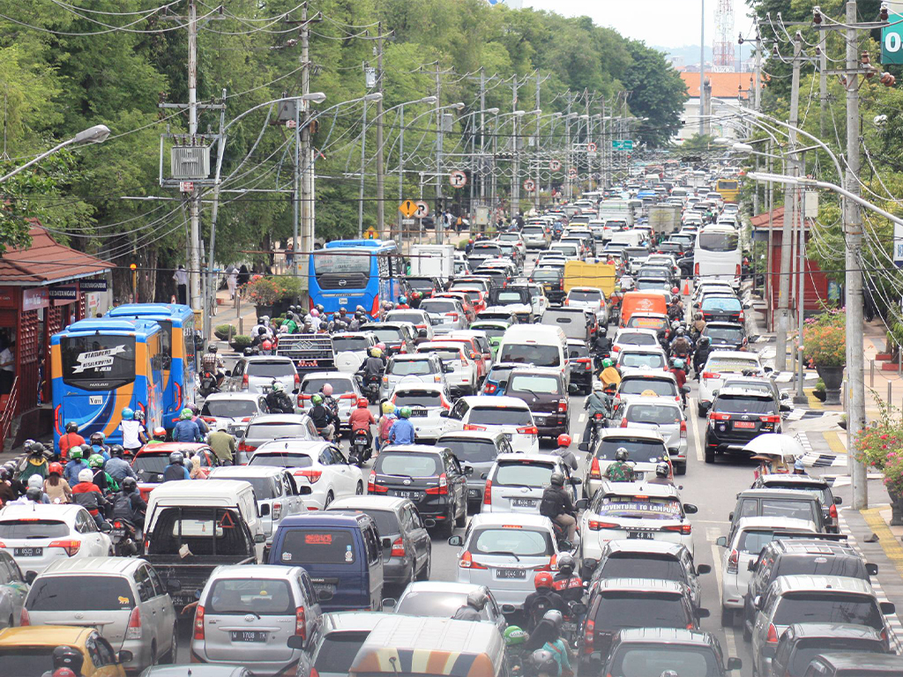

Data Kecelakaan Lalu Lintas di Jawa Tengah Tahun 2019
(Sumber gambar: jatengtoday.com)
Data dalam sistem informasi geografis ini diperoleh dari 2 data pada Badan Pusat Statistik (BPS) serta 1 data dari Subdit Kamsel Ditlantas Polda Jateng yakni sebagai berikut:
Kasus Kecelakaan
Korban Meninggal Dunia
Korban Luka Berat
Korban Luka Ringan
Komparasi Data
Berikut ini adalah kompilasi data kecelakaan lalu lintas, titik rawan kecelakaan lalu lintas, serta ketersediaan fasilitas kesehatan di Provinsi Jawa Tengah pada tahun 2019 yang diperoleh dari Badan Pusat Statistik (BPS) serta Subdit Kamsel Ditlantas Polda Jateng
| No. | Kota/Kab | Kasus | Titik Rawan | Meninggal | Luka Berat | Luka Ringan | Fasilitas Kesehatan |
|---|---|---|---|---|---|---|---|
| 1 | Kota Semarang | 1365 | 5 | 193 | 2 | 1434 | 2994 |
| 2 | Kota Surakarta | 1086 | - | 65 | 0 | 1150 | 2301 |
| 3 | Kota Salatiga | 296 | - | 39 | 8 | 294 | 637 |
| 4 | Kota Magelang | 265 | - | 27 | 0 | 309 | 601 |
| 5 | Kota Tegal | 293 | - | 23 | 0 | 353 | 669 |
| 6 | Kota Pekalongan | 122 | - | 35 | 0 | 115 | 272 |
| 7 | Kab. Banjarnegara | 490 | - | 93 | 5 | 569 | 1157 |
| 8 | Kab. Banyumas | 1050 | 2 | 224 | 7 | 1149 | 2430 |
| 9 | Kab. Batang | 516 | - | 155 | 13 | 655 | 1339 |
| 10 | Kab. Blora | 460 | - | 83 | 2 | 560 | 1105 |
| 11 | Kab. Boyolali | 898 | - | 98 | 1 | 1245 | 2242 |
| 12 | Kab. Brebes | 886 | - | 182 | 3 | 1006 | 2077 |
| 13 | Kab. Cilacap | 898 | - | 189 | 0 | 1263 | 2350 |
| 14 | Kab. Demak | 696 | - | 161 | 0 | 721 | 1578 |
| 15 | Kab. Grobogan | 716 | - | 145 | 0 | 773 | 1634 |
| 16 | Kab. Jepara | 581 | - | 116 | 0 | 626 | 1323 |
| 17 | Kab. Karanganyar | 1467 | 4 | 124 | 2 | 1687 | 3280 |
| 18 | Kab. Kebumen | 694 | - | 161 | 0 | 838 | 1693 |
| 19 | Kab. Kendal | 358 | - | 125 | 2 | 330 | 815 |
| 20 | Kab. Klaten | 1408 | - | 161 | 5 | 2308 | 3882 |
| 21 | Kab. Kudus | 964 | 1 | 98 | 1 | 1072 | 2135 |
| 22 | Kab. Magelang | 1235 | - | 169 | 5 | 1440 | 2849 |
| 23 | Kab. Pati | 1525 | 3 | 208 | 0 | 1754 | 3487 |
| 24 | Kab. Pekalongan | 256 | - | 64 | 7 | 276 | 603 |
| 25 | Kab. Pemalang | 424 | - | 138 | 0 | 467 | 1029 |
| 26 | Kab. Purbalingga | 579 | - | 77 | 0 | 715 | 1371 |
| 27 | Kab. Purworejo | 576 | - | 119 | 3 | 644 | 1342 |
| 28 | Kab. Rembang | 543 | - | 113 | 0 | 585 | 1241 |
| 29 | Kab. Semarang | 565 | - | 130 | 1 | 665 | 1361 |
| 30 | Kab. Sragen | 1225 | - | 141 | 0 | 1564 | 2930 |
| 31 | Kab. Sukoharjo | 1279 | 2 | 107 | 3 | 1486 | 2875 |
| 32 | Kab. Tegal | 619 | - | 161 | 0 | 636 | 1416 |
| 33 | Kab. Temanggung | 458 | - | 86 | 1 | 600 | 1145 |
| 34 | Kab. Wonogiri | 874 | - | 86 | 0 | 955 | 1915 |
| 35 | Kab. Wonosobo | 295 | - | 45 | 25 | 311 | 676 |
| TOTAL | 25962 | 17 | 4141 | 96 | 30555 | 2334 | |